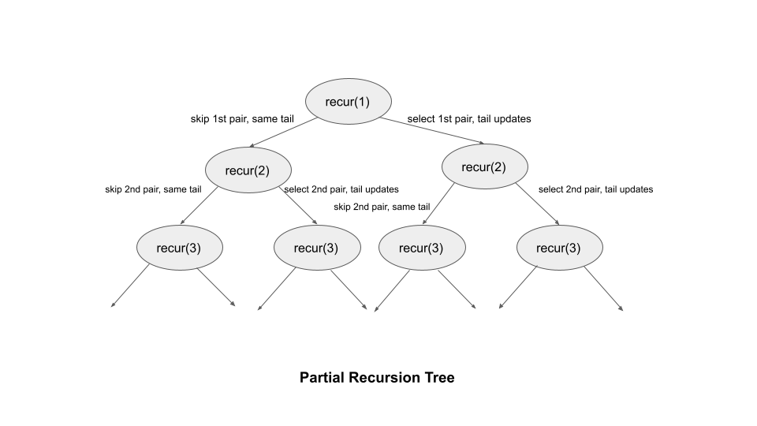

We are given an array of n pairs pairs where pairs[i]=[lefti,righti]\text{pairs}[i] = [\text{left}_i, \text{right}_i] and lefti<righti\text{left}_i < \text{right}_i.
A pair p2 = [c, d] follows a pair p1 = [a, b] if b < c. A chain of pairs
can be formed in this fashion.
Our task is to return the length of the longest chain which can be formed.
Two pairs can join together to form a chain if the second element of the first pair is less than the first element of the next pair. Since the problem says that we can choose any combination in any order, we can safely sort the input. We can guarantee that all feasible chains can be built iteratively going from the first to the last pair after sorting.
Following sorting, we have two options for a pair at index i: we may either include this pair in our
current chain or we can choose not to include this pair in our current chain.
If we do not include this pair in the current chain, we may simply skip it and move on to the pair at index i +
1. We shall repeat in the range [i + 1, n). Because we have already sorted the
pairs, it means the next potential pair will be located after the present pair.
Otherwise, if we include this pair, we increase the length of the chain by 1. We then need to find the
next pair that would follow the one we just added. It will be at an index j in the range of [i +
1, n), and its first element must be greater than the second element of the pair we just added.
This would solve the problem but the solution is exponential in terms of time complexity.
Here's how the partial recursion tree would look like for the above approach where recur is the
recursive function that takes in the index of the starting pair and recursively finds the longest chain
considering the pairs starting from the index:

The word tail refers to the second element of the most recently selected pair. The next chosen pair should have the first element be greater than the tail.
We can observe that there are several repeating problems in this solution. Several subproblems, such as recur(2),
recur(3), etc., are solved multiple times in the partial recursion tree shown above. If we draw the
entire recursion tree, we can see that many subproblems are solved repeatedly.
To avoid this issue, we store the solution of each sub-problem and when we encounter the same subproblem again, we simply refer to the stored result. This is called memoization.
We create an array of integers memo where memo[i] will store the longest length of the
chain starting from the ithi^{th}
pair and including it.
We can now select every pair as the starting pair one by one.
For each starting pair i, we try to select all the pairs from the range [i + 1, n) as the
next pair one by one.
We run a loop from j = i + 1 to n - 1 to check all the potential next pairs. If we can
choose the pair at index j (pairs[j][0] > pairs[i][1]), we try using it as the next
pair. We want to take the pair that maximizes the final length, so we perform memo[i] = max(memo[i], 1 +
recur[j]). We added 1 as we selected the pair i in the chain and now moved to
the next pair at the index j.
The longest chain starting from each pair is stored in memo, thus the answer is the maximum value in
memo. Note that as a base case, any pair forms a chain of length 1 on its own.
n to store the number of pairs in pairs.pairs based on the first element (we could sort on the second element as well).memo of size n where memo[i] will store the
longest length of the chain starting from the ithi^{th}
pair and including it.
ans = 0.i = 0 to n - 1 as the starting pair of the chain and take the
maximum out of it in ans. To find the longest chain starting from the pair at index i,
we call the recursive method longestPairChain which takes four parameters: i of the
starting pair, pairs, n, and memo. We perform the following in this
method:
i, we
simply return memo[i].
memo[i] = 1 as the current pair can always be selected as the only pair in the chain.
j = i + 1 to n - 1 and recursively find the
longest chain that can be formed by going to the jthj^{th}
pair. We perform memo[i] = max(memo[i], 1 + longestPairChain(j, pairs, n, memo)) to figure
and store the length of the longest chain starting with ithi^{th}
pair.
ans.
Java
class Solution {
private int longestPairChain(int i, int[][] pairs, int n, int[] memo) {
if (memo[i] != 0) {
return memo[i];
}
memo[i] = 1;
for (int j = i + 1; j < n; j++) {
if (pairs[i][1] < pairs[j][0]) {
memo[i] = Math.max(memo[i], 1 + longestPairChain(j, pairs, n, memo));
}
}
return memo[i];
}
public int findLongestChain(int[][] pairs) {
int n = pairs.length;
Arrays.sort(pairs, (a, b) -> a[0] - b[0]);
int[] memo = new int[n];
int ans = 0;
for (int i = 0; i < n; i++) {
ans = Math.max(ans, longestPairChain(i, pairs, n, memo));
}
return ans;
}
}
C++
class Solution {
public:
int longestPairChain(int i, vector>& pairs, int& n, vector& memo) {
if (memo[i] != 0) {
return memo[i];
}
memo[i] = 1;
for (int j = i + 1; j < n; i++) {
if (pairs[i][1] < pairs[j][0]) {
memo[i] = max(memo[i], 1 + longestPairChain(j, pairs, n, memo));
}
}
return memo[i];
}
int findLongestChain(vector>& pairs) {
int n = pairs.size();
sort(pairs.begin(), pairs.end());
vector memo(n);
int ans = 0;
for (int i = 0; i < n; i++) {
ans = max(ans, longestPairChain(i, pairs, n, memo));
}
return ans;
}
};
Python3
class Solution:
def longestPairChain(self, i: int, pairs: List[List[int]], n: int, memo: List[int]) -> int:
if memo[i] != 0:
return memo[i]
memo[i] = 1
for j in range(i + 1, n):
if pairs[i][1] < pairs[j][0]:
memo[i] = max(memo[i], 1 + self.longestPairChain(j, pairs, n, memo))
return memo[i]
def findLongestChain(self, pairs: List[List[int]]) -> int:
n = len(pairs)
pairs.sort()
memo = [0] * n
ans = 0
for i in range(n):
ans = max(ans, self.longestPairChain(i, pairs, n, memo))
return ans
Here nn
is the length of pairs.
Time complexity: O(n2)O(n^2).
pairs.
memo array.
Space complexity: O(n)O(n).
pair always satisfies the condition to be selected as the follow-up pair.
memo array also takes O(n)O(n) space.
We used memoization in the preceding approach to store the answers to subproblems to solve a larger problem. We can also use a bottom-up approach to solve such problems without using recursion. We build answers to subproblems iteratively first, then use them to build answers to larger problems.
We create a list dp[n] where dp[i] will store the length of the longest chain starting from
pair i and selecting it in the chain. Note that dp[i] = memo[i] = longestPairChain(i, pairs, n,
memo) from the previous approach.
We initialize dp[i] = 1 for all values of i since a single pair can always form a chain on
its own. While moving from bottom to top, this serves as the base case for our solution.
We iterate from i = n - 1 to 0 in the outer loop. It controls the starting index of the
pair. After choosing the ithi^{th}
pair, we go on to the next pair by executing an inner loop from j = i + 1 to n - 1. We
determine if the pair at index j can be chosen as the ithi^{th}
pair's successor.
If we can choose pair j, we take the maximum from the longest chain we created so far beginning with
i (dp[i]) and moving forward by selecting pair j as the next pair to create
the longest chain possible. Basically, dp[i] = max(dp[i], 1 + dp[j]) is what we perform. We would
already know the solution to dp[j] as we are going from the end to the beginning.
The maximum value in the dp array is the answer.
You may realize that we could also fill the dp table by moving from the start to the end. We can use an
outer loop from i = 1 to n - 1 and an inner loop from j = 0 to i -
1 to fill the dp table from the start.
n to store the number of pairs in pairs.pairs based on the first element (we could sort on the second element as well).dp of size n where dp[i] will store the longest
length of the chain starting from the ithi^{th}
pair and including it. We initialize all the elements in dp to 1.
ans = 1 that stores the answer to the problem. As we have at least one
pair in the input, we initialize it to 1.
i = n - 1 to 0 and the inner loop
runs from j = i + 1 to n - 1:
pairs[i][1] < pairs[j][0], we update dp[i] = max(dp[i], 1 +
dp[j]).
ans = max(ans, dp[i]).
ans.
Java
class Solution {
public int findLongestChain(int[][] pairs) {
int n = pairs.length;
Arrays.sort(pairs, (a, b) -> a[0] - b[0]);
int[] dp = new int[n];
Arrays.fill(dp, 1);
int ans = 1;
for (int i = n - 1; i >= 0; i--) {
for (int j = i + 1; j < n; j++) {
if (pairs[i][1] < pairs[j][0]) {
dp[i] = Math.max(dp[i], 1 + dp[j]);
}
}
ans = Math.max(ans, dp[i]);
}
return ans;
}
}
C++
class Solution {
public:
int findLongestChain(vector>& pairs) {
int n = pairs.size();
sort(pairs.begin(), pairs.end());
vector dp(n, 1);
int ans = 1;
for (int i = n - 1; i >= 0; i--) {
for (int j = i + 1; j < n; j++) {
if (pairs[i][1] < pairs[j][0]) {
dp[i] = max(dp[i], 1 + dp[j]);
}
}
ans = max(ans, dp[i]);
}
return ans;
}
};
Python3
class Solution:
def findLongestChain(self, pairs: List[List[int]]) -> int:
n = len(pairs)
pairs.sort()
dp = [1] * n
ans = 1
for i in range(n - 1, -1, -1):
for j in range(i + 1, n):
if pairs[i][1] < pairs[j][0]:
dp[i] = max(dp[i], 1 + dp[j])
ans = max(ans, dp[i])
return ans
Here nn
is the length of pairs.
Time complexity: O(n2)O(n^2).
pairs which takes O(n⋅logn)O(n \cdot \log{n}) time.
Space complexity: O(n)O(n).
dp array takes O(n)O(n) space.
In the first two methods, we used dynamic programming to construct the solution to a larger problem by solving smaller subproblems. Let's think if we can solve the problem using a greedy approach.
We must think about sorting pairs if we want to solve the problem using a greedy strategy, which
involves picking up pairs on the fly from the beginning to the end whenever we can.
Let's see what happens if we order the "pairs" based on the first element and then pick pairs whenever we can in
order. Take the pairs [1, 10], [2, 4], [5, 8], [9, 11] as an example. They are ordered according to the
first element.
An incorrect answer of 1 will be returned if we choose the first element and keep choosing the pairs as
we go. The correct answer is 3.
This suggests that sorting based on the first element wouldn't be effective because the second element of a selected pair might be large enough to prevent the addition of numerous additional pairs.
Note that sorting based on the first element worked with the earlier methods because we built the solution optimally for the length of all feasible chains, rather than just greedily choosing the first pair.
Let's check out what happens if we sort the above list of pairs now using the second element. The above example would
be changed to [2, 4], [5, 8], [1, 10], [9, 11]. If we begin by greedily choosing the pairs, we will
choose [2, 4], [5, 8], [9, 11], yielding the answer 3, which is the right answer.
Will this always work?
Consider pairA and pairB, where pairA appears before pairB in the
sorted pairs based on the second element. We want to figure out if it is always correct to pick pairA
first if it comes before any other pair pairB.
Since pairA comes before pairB in the sorted list, it implies that pairA[1] <=
pairB[1]. There are no guarantees on pairA[0] and pairB[0].
Now, if pairA[1] < pairB[0], it's obvious that we should append pairA first. This is
because after picking pairA we can still pick pairB.
When pairA[1] >= pairB[0], we have to choose carefully. It means that either we only append pairA
to the chain, or we only append pairB to the chain. Appending either pairA or
pairB will increment the length of the chain by 1 but will affect the next pair we can
pick.
The tail of the current chain would be pairA[1] if we choose pairA and would be pairB[1]
if choose pairB. Since pairA[1] < pairB[1] (due to sorting), it is better to choose
pairA first because that way we expose a smaller tail which has a better opportunity to append more
future pairs.
As you can see, in both cases, it is better to pick pairA. So, this greedy approach of sorting pairs
based on the second element and then greedily picking pairs whenever we can starting from the first pair will always
give the length of the longest chain.
pairs based on the second element.curr to store the tail of the current chain (second element of the most
recently selected pair). We initialize it to a large negative value.
ans = 0 that stores the answer to the problem.pairs from the start. For each pair in
pairs, we perform the following:
pair[0] > curr, i.e., starting of pair is greater than the current tail
of the chain curr, we increment ans by 1 and update curr =
pair[1].
ans.
Java
class Solution {
public int findLongestChain(int[][] pairs) {
// Sort pairs in ascending order based on the second element.
Arrays.sort(pairs, (a, b) -> a[1] - b[1]);
int curr = Integer.MIN_VALUE;
int ans = 0;
for (int[] pair : pairs) {
if (pair[0] > curr) {
ans++;
curr = pair[1];
}
}
return ans;
}
}
C++
class Solution {
public:
int findLongestChain(vector>& pairs) {
// Sort pairs in ascending order based on the second element.
sort(pairs.begin(), pairs.end(),
[](const vector& a, const vector& b) { return a[1] < b[1]; });
int curr = INT_MIN, ans = 0;
for (const auto& pair : pairs) {
if (pair[0] > curr) {
ans++;
curr = pair[1];
}
}
return ans;
}
};
Python3
class Solution:
def findLongestChain(self, pairs: List[List[int]]) -> int:
# Sort pairs in ascending order based on the second element.
pairs.sort(key=lambda x: x[1])
curr = float('-inf')
ans = 0
for pair in pairs:
if pair[0] > curr:
ans += 1
curr = pair[1]
return ans
Here nn
is the length of pairs.
Time complexity: O(n⋅logn)O(n \cdot \log{n}).
pairs based on the second element which takes O(n⋅logn)O(n \cdot \log{n}) time.
pairs which takes O(n)O(n).
Space complexity: O(1)O(1).